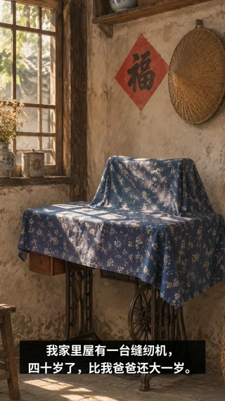

回首页
提示词
第 4 期 · 咖啡店
窗边捧拿铁
2026-11-17
双手捧着温热的拿铁，窗外的阳光正好，绿植在旁边安安静静。
吧台看拉花
2026-11-17
牛奶倒进杯里，拉花一圈圈晕开，笑得有点藏不住。
圆桌读书
2026-11-17
书翻到一半，咖啡还冒着热气，桌上那朵粉色的花开得正好。
当日其他照片
🔒 当日其他照片已上锁，输入当日日期查看（如 1122）
查看
当日视频

老年故事会第 3 集《奶奶的缝纫机》
▶ 播放
2026-11-17 · 时长：4 分 0 秒
备 注
三张脸都对上锚图，米色针织衫三张一致；第三张书页上的字是模糊小字，细看不清，不算乱码，照实留着。
← 上一期
下一期 →